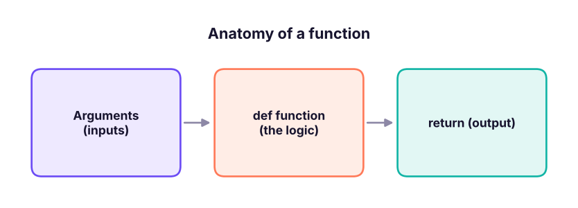

Functions: Reusable Code, Arguments, Scope and Docstrings
Package logic into reusable functions. Learn def, parameters and arguments (positional, keyword, default, *args, **kwargs), return values, scope, docstrings and type hints, plus testing small functions on real data.
- Define and call functions with positional, keyword and default arguments
- Use *args and **kwargs and return multiple values
- Explain local vs global scope and avoid the mutable-default trap
- Write docstrings and type hints that make functions self-explaining
- Build small, testable functions for data cleaning and metrics
Why functions?
A function is a named, reusable block of code. It removes copy-paste, makes code testable, and lets you give a name to an idea (clean_phone, margin_pct).

def greet(name):
return f"Hello, {name}!"
print(greet("Asha"), greet("Ravi"))Hello, Asha! Hello, Ravi!
Parameters and arguments
def margin_pct(profit, sales, decimals=1):
"""Profit as a percentage of sales."""
return round(100 * profit / sales, decimals)
print(margin_pct(25, 200)) # positional
print(margin_pct(sales=200, profit=25)) # keyword: order does not matter
print(margin_pct(25, 200, decimals=3)) # default overridden12.5 12.5 12.5
| Kind | Example | Notes |
|---|---|---|
| Positional | f(1, 2) |
Matched by order |
| Keyword | f(b=2, a=1) |
Matched by name; clearer |
| Default | def f(a, b=10) |
Optional argument; defaults go last |
*args |
def f(*args) |
Extra positional arguments as a tuple |
**kwargs |
def f(**kwargs) |
Extra keyword arguments as a dict |
| Keyword-only | def f(a, *, b) |
b must be named |
def total(*nums): return sum(nums)
def describe(**info): return ", ".join(f"{k}={v}" for k, v in info.items())
def report(title, *values, sep=" | ", **opts): return title + ": " + sep.join(map(str, values)) + f" {opts}"
print(total(1, 2, 3), total(), describe(city="Pune", year=2025))
print(report("Sales", 10, 20, 30, sep=",", currency="INR"))
nums = [4, 5, 6]; opts = {"decimals": 2}
print(total(*nums), margin_pct(7, 30, **opts)) # unpack a list / dict into arguments6 0 city=Pune, year=2025
Sales: 10,20,30 {'currency': 'INR'}
15 23.33Return values
def stats(values):
n = len(values)
mean = sum(values) / n
var = sum((v - mean) ** 2 for v in values) / (n - 1)
return min(values), max(values), round(mean, 2), round(var ** 0.5, 2) # a tuple
lo, hi, mean, sd = stats([12, 15, 11, 18, 14])
print(lo, hi, mean, sd)
def say(): print("no return")
print(say()) # a function with no return gives None11 18 14.0 2.74 no return None
A function that prints can only be read by humans. One that returns can be tested, combined and reused. Print at the very end, outside the function.
Scope: local vs global
rate = 0.18 # global
def price_with_gst(price):
gst = price * rate # reads the global
return price + gst # gst is local: gone after the call
print(price_with_gst(1000))
try: print(gst)
except NameError as e: print("NameError:", e)
counter = 0
def bump():
global counter # needed to *rebind* a global (rarely a good idea)
counter += 1
bump(); bump(); print(counter)1180.0 NameError: name 'gst' is not defined 2
Rule of thumb (LEGB): Python looks in Local, then Enclosing, then Global, then Built-in scope. Prefer passing values in and returning values out.
The mutable-default trap
def add_item(x, bucket=[]): # BAD: one list shared by every call
bucket.append(x); return bucket
print(add_item(1), add_item(2))
def add_item_ok(x, bucket=None): # GOOD
if bucket is None: bucket = []
bucket.append(x); return bucket
print(add_item_ok(1), add_item_ok(2))[1, 2] [1, 2] [1] [2]
Lists, dicts and sets as default values are created once, when def runs. Use None and create the object inside.
Docstrings and type hints
def clean_phone(raw: str, country_code: str = "+91") -> str:
"""Return a phone number as '+91 XXXXX XXXXX', or '' if it is not 10 digits.
>>> clean_phone("98765-43210")
'+91 98765 43210'
"""
digits = "".join(ch for ch in raw if ch.isdigit())[-10:]
if len(digits) != 10: return ""
return f"{country_code} {digits[:5]} {digits[5:]}"
print(clean_phone("98765-43210"), repr(clean_phone("12345")), clean_phone("+91 (98765) 43210"))
help(clean_phone)+91 98765 43210 '' +91 98765 43210
Help on function clean_phone in module __main__:
clean_phone(raw: str, country_code: str = '+91') -> str
Return a phone number as '+91 XXXXX XXXXX', or '' if it is not 10 digits.
>>> clean_phone("98765-43210")
'+91 98765 43210'Type hints do not change how the code runs, but editors and tools such as mypy use them, and they document intent. Write the docstring first line as a short summary; tools like help() and IDE hovers display it.
Functions are objects
def square(x): return x * x
fn = square # assign, store in a list, pass as an argument
def apply_twice(f, x): return f(f(x))
print(fn(4), apply_twice(square, 3), [f.__name__ for f in (square, len, str)])
def make_multiplier(n): # a function that returns a function (a closure)
def times(x): return x * n
return times
double, triple = make_multiplier(2), make_multiplier(3)
print(double(7), triple(7))16 81 ['square', 'len', 'str'] 14 21
Functions on real data
Small, pure functions are easy to test and to reuse across apply, comprehensions and pipelines.
import pandas as pd
s = pd.read_csv("superstore_sales.csv", parse_dates=["order_date"])
def discount_band(d: float) -> str:
if d == 0: return "none"
if d <= 0.10: return "low"
if d <= 0.20: return "medium"
return "high"
def summarise(df: pd.DataFrame, by: str) -> pd.DataFrame:
"""Sales, profit and margin % per group."""
g = df.groupby(by).agg(sales=("sales", "sum"), profit=("profit", "sum"), lines=("sales", "size"))
g["margin_pct"] = (100 * g.profit / g.sales).round(1)
return g.round(0).astype({"sales": int, "profit": int})
s["band"] = s["discount"].map(discount_band)
print(summarise(s, "band").sort_values("margin_pct", ascending=False))
print(summarise(s, "region").sort_values("sales", ascending=False)) sales profit lines margin_pct
band
none 123936290 21718963 3480 18.0
low 21864636 1286023 726 6.0
medium 35864461 -588882 1217 -2.0
high 19748182 -4063940 900 -21.0
sales profit lines margin_pct
region
South 53952768 4702012 1656 9.0
West 51958520 4719833 1614 9.0
North 49018161 4555830 1530 9.0
East 46484119 4374490 1523 9.0The same summarise works for any column. That reuse is the point: write once, call with by="category", by="segment", and so on.
Testing a function
assert margin_pct(25, 200) == 12.5
assert clean_phone("12345") == ""
assert discount_band(0.15) == "medium"
print("all checks passed")all checks passed
assert is the quickest test. Larger projects use pytest (Lesson 14).
Recursion in one paragraph
A function can call itself; it needs a base case that stops the calls.
def factorial(n):
return 1 if n <= 1 else n * factorial(n - 1)
def fib(n, memo={}): # deliberate cache; see the lesson on functools.lru_cache
if n < 2: return n
if n not in memo: memo[n] = fib(n - 1) + fib(n - 2)
return memo[n]
print(factorial(6), [fib(i) for i in range(12)], fib(60))720 [0, 1, 1, 2, 3, 5, 8, 13, 21, 34, 55, 89] 1548008755920
Python limits recursion depth (about 1,000 calls), so prefer loops for deep or large problems.
Common mistakes
| Mistake | Fix |
|---|---|
Forgetting return (function gives None) |
Check the value you expect back |
| Mutable default arguments | Use None and create inside |
Calling f instead of f() |
f is the function object; f() runs it |
Modifying a global inside a function without global |
UnboundLocalError; pass and return values instead |
| Function does too many things | One job per function; compose small ones |
| Positional order confusion | Use keyword arguments for clarity |
Summary
def name(params): ... return valuedefines a function; noreturnmeans it returnsNone.- Arguments can be positional, keyword, default,
*args(tuple) and**kwargs(dict); put defaults last. - Variables created inside a function are local; read globals freely, but prefer parameters and return values.
- Never use a mutable object as a default; use
None. - Docstrings and type hints document intent;
assertgives quick tests. - Functions are objects: you can pass them around, store them and return them (closures).
1. What does a function without a return statement return?
None implicitly.2. What is wrong with def f(x, items=[]):?
items=None and create the list inside.3. What does *args collect?
**kwargs collects the keyword ones.4. Which scope does Python search first?
5. How do you call f(a, b) with a list pair = [1, 2]?
* unpacks the list into positional arguments.6. Why return values instead of printing them?
(1) Write is_prime(n). (2) Write percent_change(old, new) returning a rounded percentage and guard against old == 0. (3) Write top_n(df, col, n=5) that returns the top-n Superstore rows by a column. (4) Write a function that accepts any number of numbers and returns their average, or None if none are given. (5) Add assert tests for each.
Show solution
def is_prime(n):
return n > 1 and all(n % d for d in range(2, int(n ** 0.5) + 1))
def percent_change(old, new): return None if old == 0 else round(100 * (new - old) / old, 1)
def top_n(df, col, n=5): return df.nlargest(n, col)
def average(*nums): return sum(nums) / len(nums) if nums else None
assert [x for x in range(20) if is_prime(x)] == [2, 3, 5, 7, 11, 13, 17, 19]
assert percent_change(0, 5) is None and percent_change(200, 250) == 25.0
assert average() is None and average(2, 4) == 3
print(top_n(s, "sales", 3)[["order_id", "sales"]])Q: Difference between an argument and a parameter?
Parameters are the names in the def; arguments are the values you pass when calling.
Q: What are *args and **kwargs?
They let a function accept any number of extra positional and keyword arguments; the first arrives as a tuple, the second as a dict.
Q: What is a closure? A function that remembers variables from the scope in which it was created, even after that scope has finished.
Q: Why is a mutable default argument dangerous? It is evaluated once at definition time, so state leaks between calls.
Practise more online
Free, trusted places to test yourself on this topic. Links open the original site in a new tab.